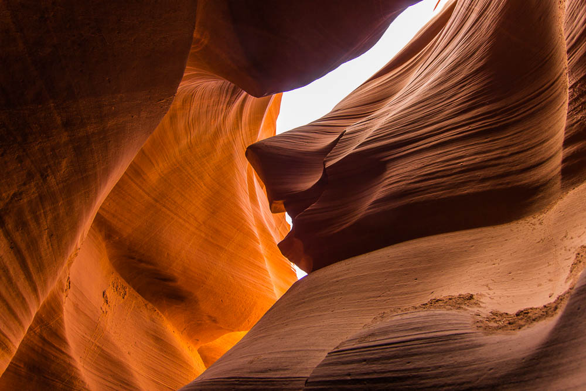

Arizona Beiname Grand Canyon State ist ein Bundesstaat, der im Südwesten der Vereinigten Staaten liegt.
Seine Hauptstadt ist Phoenix, eine der größten Städte in den Vereinigten Staaten. In Arizona liegt auch der Grand-Canyon-Nationalpark.
Arizona fiel durch den Sieg der USA über Mexiko 1848 größtenteils (1853 vollständig) an die USA, schloss sich diesen aber erst 1912 als Bundesstaat an,
als 48. und somit letzter der Contiguous United States.
In Arizona leben mehr als 7 Millionen Menschen. Genauso wie die anderen drei Staaten entlang der Grenze zwischen den Vereinigten Staaten und Mexiko
weist Arizona einen überdurchschnittlich hohen Bevölkerungsanteil von Hispanics bzw. Latinos auf (mehr als 30 %) sowie von Menschen mit Spanisch als
Muttersprache (etwa 20 %). Außerdem leben in Arizona mit mehr als 5 % überdurchschnittlich viele Indigene ein Viertel der Landesfläche sind Indianerreservat.
Quellen- und Lizenzhinweis:
Dieser Text basiert auf dem Wikipedia-Artikel
Arizona
(geänderte Fassung) und steht unter der Lizenz
Creative Commons Attribution-ShareAlike 4.0 International (CC BY-SA 4.0).
Das Bild ist von
buntekarte.de